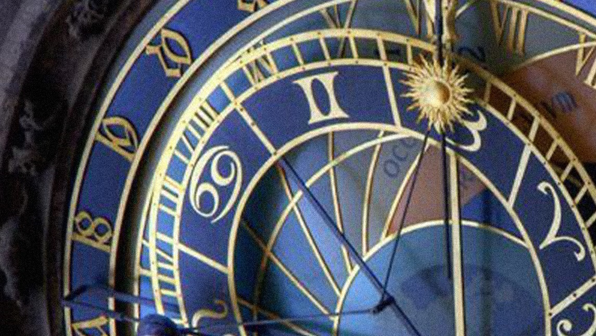

La #Astrologia no es más que un gran reloj que te muestra cuando es la hora para cada cosa. O te prepara, porque ya llega la hora. Las #Estrellas nos relevan el gran mensaje del tiempo detrás de tus tiempos. ¿Todavía no usas el infalible y más exacto reloj celestial?
“Todo tiene su momento oportuno, hay un tiempo para todo lo que se hace bajo el cielo. Tiempo de nacer, y tiempo de morir; tiempo de plantar, y tiempo de arrancar lo plantado”. Eclesiastes 3:1-2✨ Reloj preciso. Matemática. #Matrix.
Los astrónomos de la antigüedad dividieron el #Cielo en porciones cuantificables para poder medir la distancia y el movimiento de la #tierra y los planetas alrededor del Sol. Por eso podemos saber que ¡ajá! en 5 meses, por ejemplo, tal planeta pasará sobre tal punto de mi carta natal. O podemos ver (¡qué curioso!) que, por ejemplo, el #Venus de tu pareja, mejor amiga, madre, o hijo, está en el mismo exacto grado matemático que -digamos- tu #Sol.
Cuando una persona es importante en tu vida, se ve en la posición EXACTA matemática de sus #planetas y los tuyos. Cuando un momento es fundamental en tu historia, se ve en la posición EXACTA de los planetas de tránsito sobre los tuyos.
¿Magia? Nada de eso. Simplemente tiempo. Indica que el tiempo de encontrarte con esa persona, asunto o situación ha llegado, se ha de manifestar; y el #planeta, #signo y casa de tu rueda zodiacal que esté implicado es lo que te va a revelar de qué va esa experiencia, qué podés aprender de ella y cómo sacarle el mejor provecho.
Y no falla, porque la #Astrologia es el Gran Reloj de Causa y Efecto. Claro que depende de nosotros aprovechar el encuentro, el momento, la oportunidad... o seguir durmiendo en nuestro pésimo y aburridísimo loop existencial. Esto es Astrología.